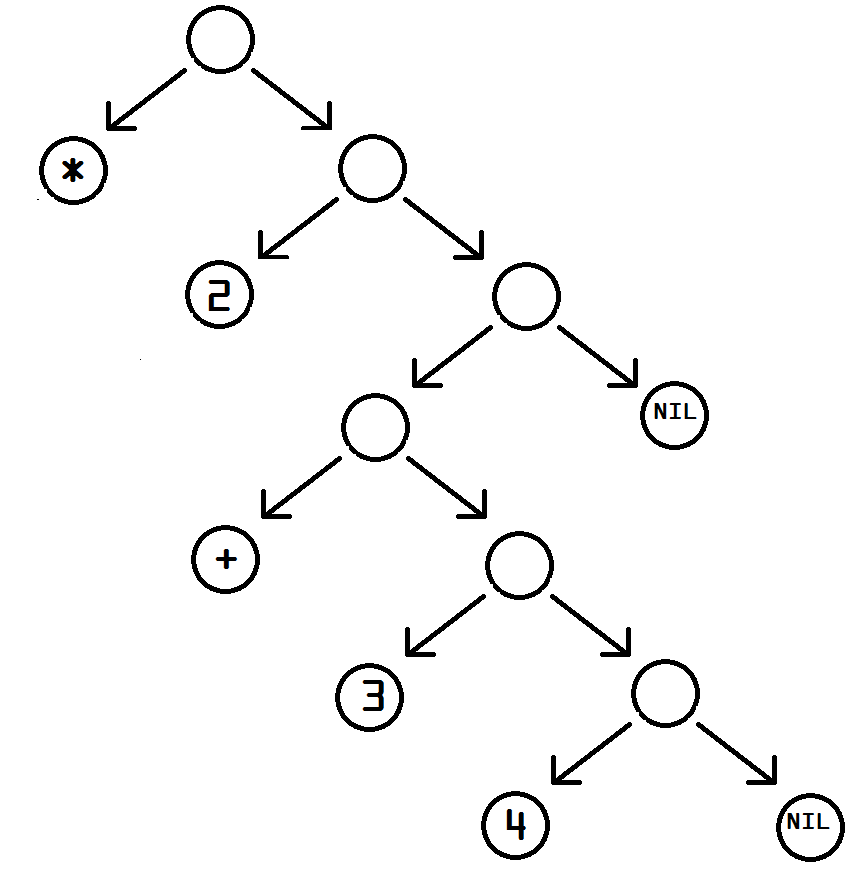

class: center, middle # Clojure: An Elegant Weapon ### Dev Bootcamp, September 2014 @johnchapin ??? # Speaker background - ~15 years as a software developer - First paying gig was Perl - First full-time job was C - One ugly Rails app - Last ~5 years doing startups - Mainly Java and Clojure now (large API-driven backends, Big Data / ML) - Intent Media, NYC --- class: center, middle  ??? "I've just received word that the Emperor has dissolved the MIT computer science program permanently." --- ## Lisp, 1958 ## Scheme, 1975 ## Common Lisp, 1984 ## Racket, 1994 ## Arc, 2001 ## Clojure, 2007 AutoLISP, EuLisp, Franz Lisp, Interlisp, ISLISP, LeLisp, LFE, Maclisp, MDL, Newlisp, NIL, Picolisp, Portable Standard Lisp, SKILL, Spice Lisp, T, XLISP, Zetalisp ??? ## Lisp - Second-oldest high-level language, one year younger than Fortran ## Clojure - Rich Hickey ## Poll the audience: - Who has heard of any of these before today? - Who has used any of these? --- class: center, middle ??? ## Crash Bandicoot - Developed using Goal Oriented Object LISP by Naughty Dog Software ## AI - Cyc - Copycat, Metacat, etc... (Douglas Hofstader, U of Indiana) Hacker News uses Arc (developed by Paul Graham) --- # Lisp languages are... - ## Functional - ## Homoiconic (code is data) # Clojure adds... - ## "First-class" concurrency - ## Java interoperability ??? Functional == pure functions transforming immutable data Pure functions are referentially transparent (memoization!) Homoiconicity great for metaprogramming --- # To the REPL! ## Want to follow along? Install Leiningen (the Clojure build tool) using Homebrew: ```bash $ brew install leiningen ``` Launch a REPL: ```bash $ lein repl ``` If that worked, you should end up with a prompt: ```bash user=> ``` ??? (+ 1 1) ; Symbolic expression - BREAK THIS DOWN S-Expressions are nested lists of forms (* 2 (+ 3 4)) ; Nested s-expressions --- # Symbolic expressions ## Nested lists ```clojure (* 2 (+ 3 4)) ```  --- #### Forms ```clojure 1, 1.0, 1N ; Long (integer), Double (float), BigInt true ; Boolean \a, "string" ; Character, String :foo ; Keyword [1 2 3] ; Vector '(1 2 3) ; List {:a 1 :b 2} ; Map #{:a :b :c} ; Set ``` #### Symbols ```clojure (def a "foo") ``` #### Operations ```clojure (println "Hello, world!") ``` ```clojure (+ 1 2) ``` ??? - Clojure reader - commas, comments - Multi-arity functions (varargs) --- # To the REPL (again)! ??? ; Demo basic functions: (println "Hello, world!") (def a "foo") (def b 1) (def c [1 2 3]) (map inc c) (reduce + c) ; Maps are functions of their keys, and vice-versa (def m {:foo 1 :bar 2 :baz 3}) (:foo m) (def vm [{:foo 1 :bar 2} {:foo 3 :bar 4}]) (map :foo vm) --- # Functions ```clojure (def foo (fn [i] (+ i 1))) ``` ```clojure (defn foo [i] (+ i 1)) ``` ```clojure (def foo #(+ i %)) ``` ```clojure (def foo (partial + 1)) ``` --- # Higher-order functions - ### Accept functions as arguments *and/or*, return functions # Pure functions - ### No side-effects (a requirement and a benefit) - ### Referentially transparent (same input, same output) - ### Parallelizable --- # To the REPL (yet again)! ??? ; Another way, with a partial function (def get-foos (partial map :foo)) ; `get-foos` is a function that already has its first argument specified (get-foos vm) ; Let's sum the values of :foo (reduce + (get-foos vm)) ; Composition is easy (def sum (partial reduce +)) (def foo-sum (comp sum get-foos)) ; `foo-sum` is a composition of sum and get-foos. Evals right to left. (foo-sum vm) ; Since foo-sum is a pure function, we can cache the results (def foo-sum-mem (memoize foo-sum)) ; Easier to see with a delay (def sleep-once (memoize (fn [ms] (Thread/sleep ms) ms))) --- class: center, middle  --- # Concurrency is hard (Java) BlockingDeque BlockingQueue Callable CompletionService ConcurrentMap ConcurrentNavigableMap Delayed Executor ExecutorService ForkJoinPool.ForkJoinWorkerThreadFactory ForkJoinPool.ManagedBlocker Future RejectedExecutionHandler RunnableFuture RunnableScheduledFuture ScheduledExecutorService ScheduledFuture ThreadFactory TransferQueue AbstractExecutorService ArrayBlockingQueue ConcurrentHashMap ConcurrentLinkedDeque ConcurrentLinkedQueue ConcurrentSkipListMap ConcurrentSkipListSet CopyOnWriteArrayList CopyOnWriteArraySet CountDownLatch CyclicBarrier DelayQueue Exchanger ExecutorCompletionService Executors ForkJoinPool ForkJoinTask ForkJoinWorkerThread FutureTask LinkedBlockingDeque LinkedBlockingQueue LinkedTransferQueue Phaser PriorityBlockingQueue RecursiveAction RecursiveTask ScheduledThreadPoolExecutor Semaphore SynchronousQueue ThreadLocalRandom ThreadPoolExecutor ThreadPoolExecutor.AbortPolicy ThreadPoolExecutor.CallerRunsPolicy ThreadPoolExecutor.DiscardOldestPolicy ThreadPoolExecutor.DiscardPolicy TimeUnit BrokenBarrierException CancellationException ExecutionException RejectedExecutionException TimeoutException --- # Concurrency is easy (Clojure) - Atoms: atom swap! reset! compare-and-set! - Futures: future future-{call, done?, cancel, cancelled?} future? - Threads: bound-fn bound-fn* {get, push, pop}-thread-bindings thread-bound? - Misc: locking pcalls pvalues pmap seque promise deliver --- class: center, middle  http://johnchapin.boostrot.net/dbc-clojure/ --- # Questions? ???